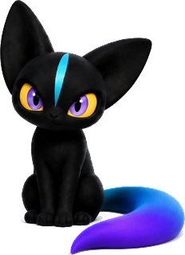

图标环 · 交互标定工具
拖滑杆实时调整扇形参数，三种吸附场景同步预览；调好后点「生成参数」，把输出贴给开发（或直接改 dock.js）。
预览（pet 窗 ×2，真实素材）

灰显芯片 = 未运行；亮圈 = 运行中（示意）。任务栏模式窗口底压入任务栏 13px。
参数
圆心 X（窗内）
圆心 Y（窗内）
半径 R
扇形张角
垂直边起始角
芯片数量
猫埋入任务栏深度
吸附场景
任务栏
右缘
左缘（镜像）
实时应用到运行中的猫
恢复默认
实时坐标
生成的 dock.js 参数
确认后把这三行贴给开发替换 dock.js 顶部的 R / arcPos 与 main.cjs 的 positionDock 偏移。